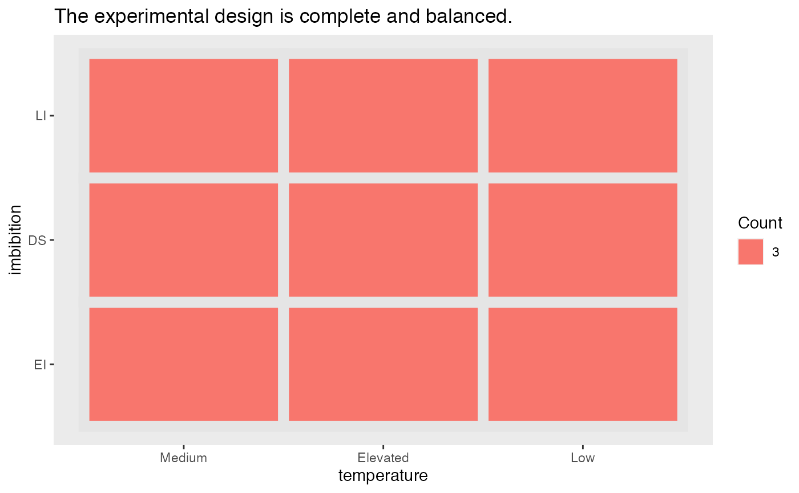
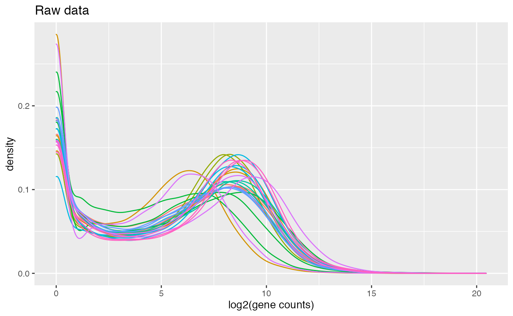
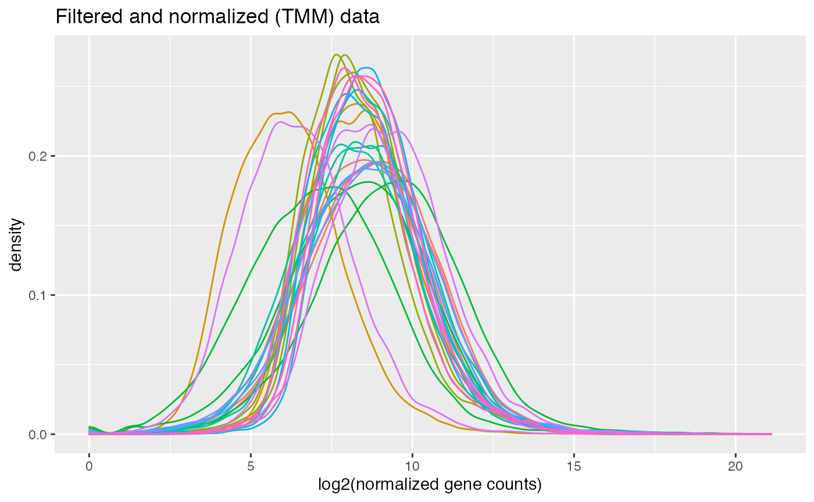
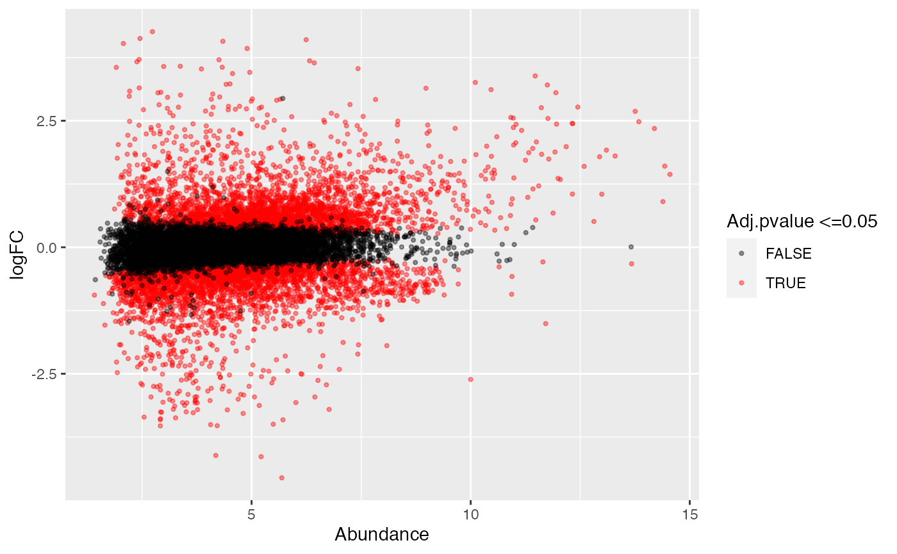
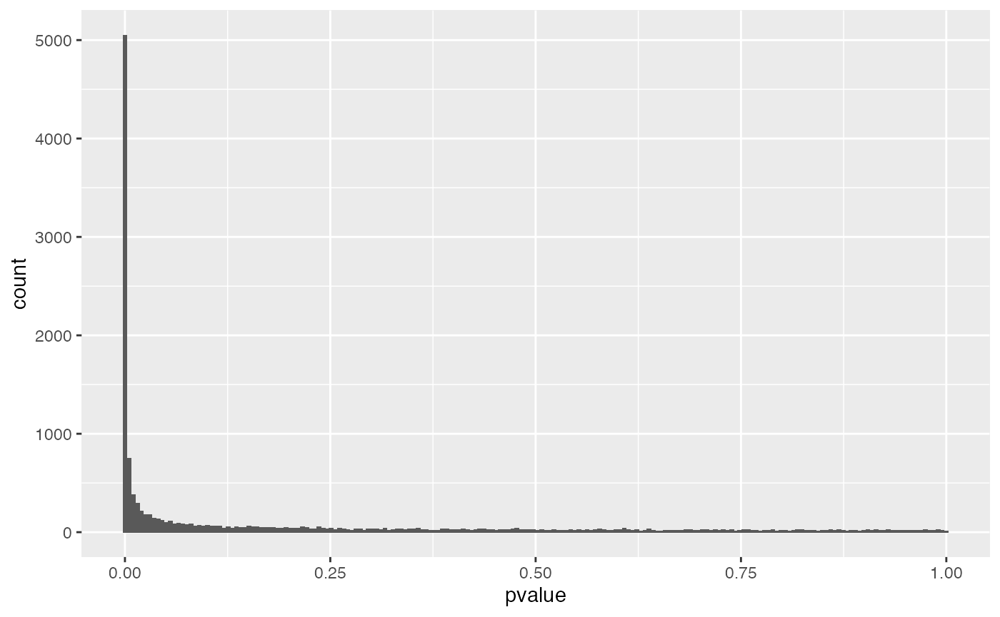
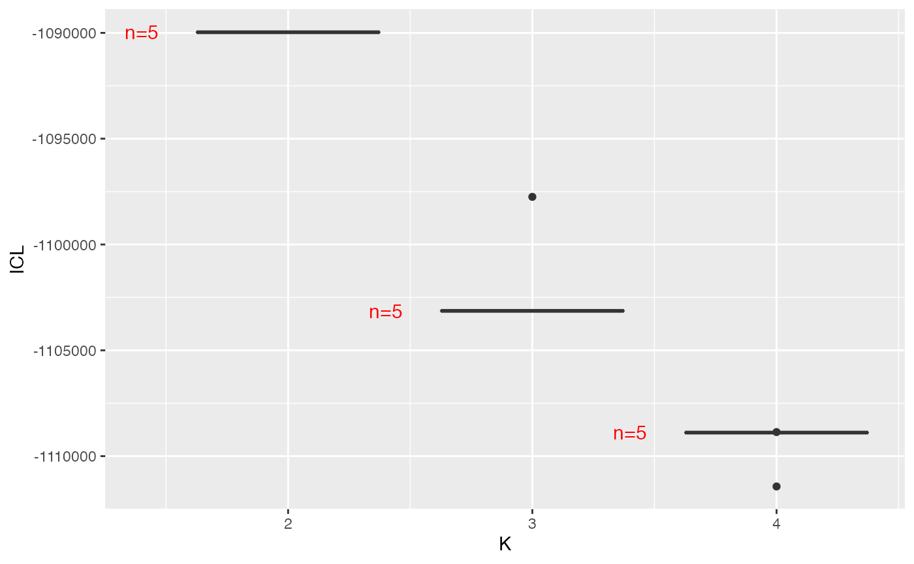
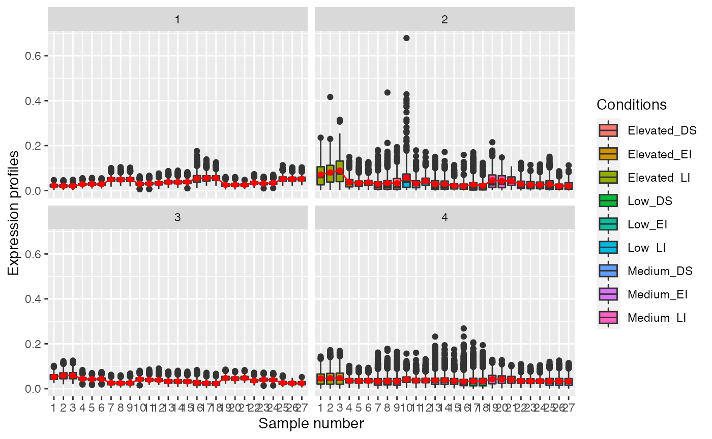

RFLOMICS: Quick Guide to omics data analysis
Delphine Charif and Nadia Bessoltane
2021-10-06
RFLOMICS-command-lines.RmdAbstract
Here, we will walk through -omics data analysis with the RFLOMICS package. We will see how to set up the statistical framework of the designed protocol: ie translate biological condition comparisons into contrasts, perform quality controls and statistical analysis of the dataset: ie. find DEG per contrasts, identify cluster of co-expressed genes and perform a gene set enrichment analysis from lists of DEG or from clusters of co-expressed genes.
Introduction:
RFLOMICS is based on proven statistical methods and pipeline for RNAseq data analysis (1). It is also based on functions allowing the automation of contrasts’s writting in R (2).
Data that will be used for this example have been provided by Loic Rajjou and Gwendal Cueff. They are included in the inst/ExampleFiles/ecoseed directory of the package. Briefly, A. thaliana’s transcriptomes have been obtained in the context of the study of seed germination and vigor. In particular, the author were interested in the influence of temperature (high, medium and low) and imbibition (Dry: DI, early imbibition: EI and late imbibition: LI) on gene’s expression.
- [Christine Paysant-Le Roux (2020), packageContrast_2020, unpublished]
- [Projet ecoseed (), ]
Input data
- Set name project.
projectName = "ecossed"- Load the experimental design file.
ExpDesign <- read.table(file= paste(path.package("RFLOMICS"), "/ExamplesFiles/ecoseed/condition.txt",sep=""),
header = TRUE,row.names = 1, sep = "\t")- Load the omics data files
geneCount <- read.table(file = file.path(path = path.package("RFLOMICS"), file ="/ExamplesFiles/ecoseed/transcriptome2_ecoseed.txt"),
header = TRUE, row.names = 1, sep = "\t")
# protAbundance <- read.table(file = file.path(path = path.package("RFLOMICS"), file ="/ExamplesFiles/ecoseed/proteome_ecoseed.txt"),
# header = TRUE,row.names = 1, sep = "\t")
# metaAbundance <- read.table(file = file.path(path = path.package("RFLOMICS"), file ="/ExamplesFiles/ecoseed/metabolome_ecoseed.txt"),
# header = TRUE,row.names = 1, sep = "\t")- Load annotation file(s) for enrichment analysis.
The column 1 => feature names (same used in abundance matrix) The column 2 => term IDs (ex. GO term accession : GO:0034599) The column 3 => term names (ex. GO term name : cellular response to oxidative stress) The column 4 => source or type (ex. GO domain : biological_process)
annot.genes <- read.table(file = file.path(path=path.package("RFLOMICS"), file="/ExamplesFiles/ecoseed/AT_GOterm_EnsemblPlants.txt"),
header = TRUE, sep="\t", )
#> Warning in scan(file = file, what = what, sep = sep, quote = quote, dec = dec, :
#> Fin de fichier (EOF) dans une chaîne de caractères entre guillements
#> Warning in scan(file = file, what = what, sep = sep, quote = quote, dec = dec, :
#> le nombre d'objets lus n'est pas un multiple du nombre de colonnes
colnames(annot.genes) <- c("geneID", "Term", "Name", "Domain")Set up the statistical framework
- Define the type of factors (either ‘biological’=‘Bio’ or ‘batch’=‘batch’ effect factor) and the level of reference for each factor.
Design.Factors.Name <- names(ExpDesign)
Design.Factors.Type <- c("batch","Bio","Bio")
# Define the level of reference (factor modality) of each factor
Design.Factors.Ref <- c("rep1","Medium","EI")
# remplacer les 2 derniers parametres par un dataframe?
# Design.Factors <- data.frame(Design.Factors.Name = c("Repeat", "temperature", "imbibition"),
# Design.Factors.Type = c("batch","Bio","Bio"),
# Design.Factors.Ref = c("rep1","Medium","EI"))- Instantiate an object of class Design. This object will contain all information about statistical framework.
#Design <- ExpDesign.constructor(ExpDesign = ExpDesign, Design.Factors = Design.Factors)
Design <- ExpDesign.constructor(ExpDesign = ExpDesign, refList = Design.Factors.Ref, typeList = Design.Factors.Type)- Check the completeness of the design. You must have all possible combinations of factor’s level. Balanced design is not required (presence of the same number of replicats for all possible combinations) but advised. You must also have at least one biological factor and 2 replicats.
# check completeness
completeCheckRes <- CheckExpDesignCompleteness(Design)
# plot
completeCheckRes$plotDesign checking’s result
# error message if exist
completeCheckRes$error
#> NULLIn this example, you can see that the design is complete but not balanced.
- Choose the statistical model associated to the experimental design. Models are written from the most complete one, with two orders interaction terms between the biological factors, to the simplest one. Batch factor did not appears in interaction terms.
# remplacer aussi ici
#Design.formulae <- GetModelFormulae(Design.Factors = Design.Factors)
Design.formulae <- GetModelFormulae(Factors.Name = Design.Factors.Name,
Factors.Type = Design.Factors.Type)
Design.formulae
#> $`~Repeat + temperature + imbibition + temperature:imbibition`
#> ~Repeat + temperature + imbibition + temperature:imbibition
#> <environment: 0x7fc4b1b7add0>
#>
#> $`~Repeat + temperature + imbibition`
#> ~Repeat + temperature + imbibition
#> <environment: 0x7fc4b1b6a040>
#>
#> $`~Repeat + temperature`
#> ~Repeat + temperature
#> <environment: 0x7fc4b1ba4f20>
#>
#> $`~Repeat + imbibition`
#> ~Repeat + imbibition
#> <environment: 0x7fc4b1b8a318>In this example, the complete model with the interaction term describes the experiment.
-
View all the ‘a priori’ hypothesis you thought for the experiment. They are divided into 3 categories: simple, averaged and interaction contrasts
- simple: For a given biological factor, does a difference in gene expression between two factor’s modalities exists when one modality has been fixed for all other factors.
- averaged: Does the difference in gene expression between two factor’s modalities exists if we consider an average gene expression between the modalities for the other factor’s ?
- interaction: Does the difference in gene expression between two factor’s modalities is the same for the different modalities of other factors ?
# Get all the possible contrasts from the complete model with interaction
Design <- getExpressionContrast(object = Design,
model.formula = names(Design.formulae[1]))
#>
#> treatment factors names:
#> [1] "temperature" "imbibition"
# Simple Contrasts
# knitr::kable( Design@Contrasts.List$simple[,-c(1:2)], caption = 'Simple Contrasts')
Design@Contrasts.List$simple[,-c(1:2)]
#> contrastName type
#> 1: (temperatureLow - temperatureElevated) in imbibitionLI simple
#> 2: (temperatureMedium - temperatureElevated) in imbibitionLI simple
#> 3: (temperatureMedium - temperatureLow) in imbibitionLI simple
#> 4: (temperatureLow - temperatureElevated) in imbibitionEI simple
#> 5: (temperatureMedium - temperatureElevated) in imbibitionEI simple
#> 6: (temperatureMedium - temperatureLow) in imbibitionEI simple
#> 7: (temperatureLow - temperatureElevated) in imbibitionDS simple
#> 8: (temperatureMedium - temperatureElevated) in imbibitionDS simple
#> 9: (temperatureMedium - temperatureLow) in imbibitionDS simple
#> 10: (imbibitionEI - imbibitionLI) in temperatureElevated simple
#> 11: (imbibitionEI - imbibitionLI) in temperatureLow simple
#> 12: (imbibitionEI - imbibitionLI) in temperatureMedium simple
#> 13: (imbibitionDS - imbibitionLI) in temperatureElevated simple
#> 14: (imbibitionDS - imbibitionLI) in temperatureLow simple
#> 15: (imbibitionDS - imbibitionLI) in temperatureMedium simple
#> 16: (imbibitionDS - imbibitionEI) in temperatureElevated simple
#> 17: (imbibitionDS - imbibitionEI) in temperatureLow simple
#> 18: (imbibitionDS - imbibitionEI) in temperatureMedium simple
#> fixFactor
#> 1: imbibitionLI
#> 2: imbibitionLI
#> 3: imbibitionLI
#> 4: imbibitionEI
#> 5: imbibitionEI
#> 6: imbibitionEI
#> 7: imbibitionDS
#> 8: imbibitionDS
#> 9: imbibitionDS
#> 10: temperatureElevated
#> 11: temperatureLow
#> 12: temperatureMedium
#> 13: temperatureElevated
#> 14: temperatureLow
#> 15: temperatureMedium
#> 16: temperatureElevated
#> 17: temperatureLow
#> 18: temperatureMedium
# Averaged Contrasts
# knitr::kable( Design@Contrasts.List$averaged[,-c(1:2)], caption = 'Averaged Contrasts')
Design@Contrasts.List$averaged[,-c(1:2)]
#> contrastName type
#> 1: (temperatureLow - temperatureElevated) in mean mean
#> 2: (temperatureMedium - temperatureElevated) in mean mean
#> 3: (temperatureMedium - temperatureLow) in mean mean
#> 4: (imbibitionEI - imbibitionLI) in mean mean
#> 5: (imbibitionDS - imbibitionLI) in mean mean
#> 6: (imbibitionDS - imbibitionEI) in mean mean
#> meanIn
#> 1: imbibitionLI + imbibitionEI + imbibitionDS
#> 2: imbibitionLI + imbibitionEI + imbibitionDS
#> 3: imbibitionLI + imbibitionEI + imbibitionDS
#> 4: temperatureElevated + temperatureLow + temperatureMedium
#> 5: temperatureElevated + temperatureLow + temperatureMedium
#> 6: temperatureElevated + temperatureLow + temperatureMedium
# Interaction Contrasts
# knitr::kable(Design@Contrasts.List$interaction[,-c(1:2,4)], caption = 'Interaction Contrasts')
Design@Contrasts.List$interaction[,-c(1:2,4)]
#> groupInteraction
#> 1: temperature vs imbibition
#> 2: temperature vs imbibition
#> 3: temperature vs imbibition
#> 4: temperature vs imbibition
#> 5: temperature vs imbibition
#> 6: temperature vs imbibition
#> 7: temperature vs imbibition
#> 8: temperature vs imbibition
#> 9: temperature vs imbibition
#> contrastName
#> 1: (temperatureLow - temperatureElevated) in imbibitionEI - (temperatureLow - temperatureElevated) in imbibitionLI
#> 2: (temperatureMedium - temperatureElevated) in imbibitionEI - (temperatureMedium - temperatureElevated) in imbibitionLI
#> 3: (temperatureMedium - temperatureLow) in imbibitionEI - (temperatureMedium - temperatureLow) in imbibitionLI
#> 4: (temperatureLow - temperatureElevated) in imbibitionDS - (temperatureLow - temperatureElevated) in imbibitionLI
#> 5: (temperatureMedium - temperatureElevated) in imbibitionDS - (temperatureMedium - temperatureElevated) in imbibitionLI
#> 6: (temperatureMedium - temperatureLow) in imbibitionDS - (temperatureMedium - temperatureLow) in imbibitionLI
#> 7: (temperatureLow - temperatureElevated) in imbibitionDS - (temperatureLow - temperatureElevated) in imbibitionEI
#> 8: (temperatureMedium - temperatureElevated) in imbibitionDS - (temperatureMedium - temperatureElevated) in imbibitionEI
#> 9: (temperatureMedium - temperatureLow) in imbibitionDS - (temperatureMedium - temperatureLow) in imbibitionEI
#> type
#> 1: interaction
#> 2: interaction
#> 3: interaction
#> 4: interaction
#> 5: interaction
#> 6: interaction
#> 7: interaction
#> 8: interaction
#> 9: interaction
# Select The 2 firsts
Design.contrastList <- Design@Contrasts.List
#Design.contrastList$simple <- Design.contrastList$simple[c(1:9)]$contrast
#Design.contrastList$averaged <- Design.contrastList$averaged[1:3]
#Design.contrastList <- Design.contrastList[-3]
# Set the coefficients
Design <- getContrastMatrix(object = Design, contrastList = unlist(Design.contrastList))Creating a Flomics MultiAssayExperiment object
All input data (abundance, metadata, statistical framework), choice about tools, parameters, threshold, and analysis results are managed in (by) the FlomicsMultiAssayExp object, an instance of the class MultiAssayExperiment (MAE). See the next paragraph to have a description. This object is created by FlomicsMultiAssay.constructor method. This method takes in input : a list of lists (per dataset) of abundance matrices (and their metadata if it exist), and “Design” object.
Build a list of abundances :
ListofData <- list(
"RNAseq1"=list( "data"=geneCount, "meta"=NULL, "omicType"="RNAseq"))
# "proteomics1"= list( "data"=protAbundance, "meta"=NULL, "omicType"="proteomics"),
# "Metabolomics1"=list( "data"= metaAbundance, "meta"=NULL, "omicType"="Metabolomics"))- Instantiate an object of class MultiAssayExperiment.
FlomicsMultiAssay <- FlomicsMultiAssay.constructor(inputs = ListofData,
Design = Design,
projectName = projectName)
FlomicsMultiAssay
#> A MultiAssayExperiment object of 1 listed
#> experiment with a user-defined name and respective class.
#> Containing an ExperimentList class object of length 1:
#> [1] RNAseq1: SummarizedExperiment with 25014 rows and 27 columns
#> Functionality:
#> experiments() - obtain the ExperimentList instance
#> colData() - the primary/phenotype DataFrame
#> sampleMap() - the sample coordination DataFrame
#> `$`, `[`, `[[` - extract colData columns, subset, or experiment
#> *Format() - convert into a long or wide DataFrame
#> assays() - convert ExperimentList to a SimpleList of matrices
#> exportClass() - save all data to filesStatistical analysis of RNAseq data:
data="RNAseq1"
RNAseq.raw.SE <- FlomicsMultiAssay@ExperimentList[[data]]
CheckCompleteness.dataset <- CheckExpDesignCompleteness(Design, colnames(RNAseq.raw.SE))
CheckCompleteness.dataset$plot
CheckCompleteness.dataset$error
#> NULLFilter and Normalize
- By default, gene with 0 count are removed from the data.
- The advice filtering method is to remove genes for which NbOfsample_over_cpm <= NbConditions. For a CPM fixed at 5. In this example, there are 9 conditions. So, the number of gene with a CPM less than 5 in at least 9 samples are removed. Other strategies are available (see the help).
RNAseq.SE <- FilterLowAbundance(RNAseq.raw.SE, Filter_Strategy = "NbConditions", CPM_Cutoff = 5 )
names(RNAseq.SE@metadata)
#> [1] "omicType" "Groups" "rowSums.zero" "FilteredFeatures"
#> [5] "FilteredOptions" "FilteringOptions"We can obtain the number of genes which were filtred with this command:
length(RNAseq.SE@metadata$FilteredFeatures)
#> [1] 1159711597 genes were filtered out.
- Run the TMM normalization method. Scaling factors are stored in the table below:
RNAseq.SE <- RunNormalization(RNAseq.SE, NormMethod = "TMM")
names(RNAseq.SE@metadata)
#> [1] "omicType" "Groups" "rowSums.zero" "FilteredFeatures"
#> [5] "FilteredOptions" "FilteringOptions" "Normalization"Exploratory
- Library size distribution of raw RNAseq data:
Library_size_barplot.plot(RNAseq.raw.SE)
Library_size_barplot.plot(RNAseq.SE)
CoefNorm <- RNAseq.SE@metadata$Normalization$coefNorm
CoefNorm$samples <- row.names(RNAseq.SE@metadata$Normalization$coefNorm)
CoefNorm$samples <- factor(CoefNorm$samples, levels = CoefNorm$samples)
pA <- ggplot(CoefNorm, aes( x = samples, y = lib.size * norm.factors, fill = group )) +
geom_bar(stat = "identity") + ylab("Library Size") +
theme( axis.text.x = element_text(angle = 45, hjust = 1), legend.position = "none" )
pA


- Count distribution of raw RNAseq data:
#Data_Distribution.plot(RNAseq.raw.SE, "density")
#Data_Distribution.plot(RNAseq.raw.SE, "boxplot")
Data_Distribution_Density.plot(RNAseq.raw.SE)
Data_Distribution_Density.plot(RNAseq.SE) 
Technical and Biological variability exploration after filtering and normalisation step
- Raw data Exploratory of raw RNAseq data:
RNAseq.raw.SE <- RunPCA(RNAseq.raw.SE)
RNAseq.SE <- RunPCA(RNAseq.SE)
# mvQCdesign(object = FlomicsMultiAssay, data = data , PCA = "raw", axis = 5, pngFile = NULL)
#
# mvQCdesign(object = FlomicsMultiAssay, data = paste0(data, ".filtred") , PCA = "norm", axis = 5, pngFile = NULL)
RFLOMICS::plotPCA( RNAseq.raw.SE,
PCA = "raw", PCs = c(1, 2), condition = "groups")
RFLOMICS::plotPCA( RNAseq.SE,
PCA = "norm", PCs = c(1, 2), condition = "groups")
RFLOMICS::plotPCA( RNAseq.raw.SE,
PCA = "raw", PCs = c(1, 3), condition = "groups")
RFLOMICS::plotPCA( RNAseq.SE,
PCA = "norm", PCs = c(1, 3), condition = "groups")
RFLOMICS::plotPCA( RNAseq.raw.SE,
PCA = "raw", PCs = c(1, 3), condition = "groups")
RFLOMICS::plotPCA( RNAseq.SE,
PCA = "norm", PCs = c(1, 3), condition = "groups")


RFLOMICS::plotPCA( RNAseq.raw.SE,
PCA = "raw", PCs = c(1, 2), condition = "imbibition")
RFLOMICS::plotPCA( RNAseq.SE,
PCA = "norm", PCs = c(1, 2), condition = "imbibition")
RFLOMICS::plotPCA( RNAseq.raw.SE,
PCA = "raw", PCs = c(1, 3), condition = "imbibition")
RFLOMICS::plotPCA( RNAseq.SE,
PCA = "norm", PCs = c(1, 3), condition = "imbibition")
RFLOMICS::plotPCA( RNAseq.raw.SE,
PCA = "raw", PCs = c(1, 3), condition = "imbibition")
RFLOMICS::plotPCA( RNAseq.SE,
PCA = "norm", PCs = c(1, 3), condition = "imbibition")


#mvQCdata(object = FlomicsMultiAssay,data= paste0(data,".filtred") , PCA="norm", axis=5,pngFile= NULL) We can noticed that imbibition factor explained a very huge proportion of dataset variability: * PCA1 & PCA2: DS vs LI + 33.9 = 75 % * PCA3: EI vs LI+DS % Whereas the temperature factor explain very few: * PCA4 and PCA5: low vs Elevated ,+ 3.6 = 6.6 %.
Differential expression analysis
- Run the differential analysis thanks to the ‘RunDiffAnalyis’ method which calls the glmFit function from the edgeR package and applied the Benjamini and Hochberg (BH) FDR correction. The designed statistical model is applied for each contrast. To filter diferentially expressed genes, the ‘FilterDiffAnalysis’ method has to be called. All the raw and filtered results are stored in the metadata list of the SummarizedExperiment Object.
# run diffAnalysis
RNAseq.SE <-
RunDiffAnalysis( RNAseq.SE, design = Design, contrastList = Design@Contrasts.Sel$contrastName[1:3], Adj.pvalue.method = "BH", DiffAnalysisMethod = "edgeRglmfit", clustermq = FALSE )
#> [1] "[cmd] dge <- edgeR::estimateGLMCommonDisp(dge, design=model_matrix)"
#> [1] "[cmd] dge <- edgeR::estimateGLMTrendedDisp(dge, design=model_matrix)"
#> [1] "[cmd] dge <- edgeR::estimateGLMTagwiseDisp(dge, design=model_matrix)"
#> [1] "[cmd] fit.f <- edgeR::glmFit(dge,design=model_matrix)"
#> [1] "[cmd] apply model to each contrast"
# results filering
RNAseq.SE <-
FilterDiffAnalysis(RNAseq.SE, Adj.pvalue.cutoff = 0.05)
#> [1] "(temperatureLow - temperatureElevated) in imbibitionLI"
#> [1] "H1"
#> [1] "(temperatureMedium - temperatureElevated) in imbibitionLI"
#> [1] "H2"
#> [1] "(temperatureMedium - temperatureLow) in imbibitionLI"
#> [1] "H3"
# results access
names(RNAseq.SE@metadata)
#> [1] "omicType" "Groups" "rowSums.zero" "FilteredFeatures"
#> [5] "FilteredOptions" "FilteringOptions" "Normalization" "PCAlist"
#> [9] "DiffExpAnal"- Access to the number of up and down regulated genes.
tmpRes <-
RNAseq.SE@metadata[["DiffExpAnal"]]
DE <- vector()
DEup <- vector()
DEdown <- vector()
for (i in 1:dim(tmpRes[["contrasts"]])[1]) {
contrastName <- tmpRes[["contrasts"]][i, ]$contrastName
stats <- tmpRes[["stats"]][[contrastName]]
DE[i] <- stats$gDE
DEup[i] <- paste("(", stats$pgDEup, " %)", sep = "")
DEdown[i] <- paste("(", stats$pgDEdown, " %)", sep = "")
}
# knitr::kable(dplyr::bind_cols(
# tmpRes[["contrasts"]][, c("tag", "contrastName")],
# data.frame(
# "Nb DE" = DE,
# "Nb DEup" = DEup,
# "Nb DEdown" = DEdown
# )
# ),
# row.names = FALSE,
# caption = NULL)
dplyr::bind_cols( tmpRes[["contrasts"]][, c("tag", "contrastName")],
data.frame("Nb DE" = DE, "Nb DEup" = DEup, "Nb DEdown" = DEdown))
#> tag contrastName Nb.DE Nb.DEup
#> 1: H1 (temperatureLow - temperatureElevated) in imbibitionLI 6651 (52 %)
#> 2: H2 (temperatureMedium - temperatureElevated) in imbibitionLI 3097 (46 %)
#> 3: H3 (temperatureMedium - temperatureLow) in imbibitionLI 3294 (37 %)
#> Nb.DEdown
#> 1: (48 %)
#> 2: (54 %)
#> 3: (63 %)We can see that there are more genes differentially expressed between imbibition modalities than between temperature modalities except for low vs moderated.
- Run the DiffAnal.plot function to get the MAplot and the Pvalue distribution. By example,
pDA <-
DiffAnal.plot(RNAseq.SE,
tmpRes[["contrasts"]][1, ]$contrastName ,
Adj.pvalue.cutoff = 0.05)- Check the MAplot:
pDA$MA.plot
- You must check the Pvalue distribution for each contrast.
- If the distribution is uniform: it is ok. a few genes are DE and the FDR will find them.
- If the distribution as a peak near 0 and then is uniform: it is also ok. The higher is the peak, the higher is the number of DE genes. FDR correction can be applied.
- If the distribution has 2 peaks one near 0 and one near 1 or just one peak near 1, it is not a good news ! You have to understand what’s happened.
pDA$Pvalue.hist
- Draw a Venn diagramm of DEG for samples thanks to the UpSetR function.
DEF_mat <-
RNAseq.SE@metadata$DiffExpAnal[["mergeDEF"]]
#UpSetR::upset(DEF_mat, sets = c("H22","H23","H24")) In this example, we focus on 3 contrasts which are the difference in imbibition modalities factor with an averaged response to temperature. Set Size is the number of DEGs per hypothesis. We can see that very few DEGs are specific to one contrast. 2573 DEGs are common to the DS-LI and DS-EI contrasts. 1631 DEGs are common to the ES-LI and DS-LI contrasts. 947 DEGs are common to EI_LI and DS-EI contrasts. 7007 DEG in the three contrasts.
Coexpression analysis
A list of DEG associated to contrasts has to be constructed. Choice is given to merge (union) or intersect (intersection) the list of genes.
Co-expression analysis is done thanks to the coseq package and function with a set of optimal parameters which are the data transformation method: fixed to arcsin and the model: fixed to gaussian mixture models. The number of technical replicates to perform (iter) for each K which is the number of cluster into which the DEG genes have to be cut, can be first set to 0 to precise the range of K and then put to a minimum of 10 replicates. see the coseq vignette.
DEG_list <- getDEGlist_for_coseqAnalysis(
matrix = RNAseq.SE@metadata$DiffExpAnal[["mergeDEF"]],
colnames = c("H1","H2","H3"),
mergeType = "union")
RNAseq.SE <-
runCoExpression(RNAseq.SE,
geneList=DEG_list,
K=2:4,
replicate = 5,
model = "normal",
transformation= "arcsin",
normFactors="TMM",
nameList="List1",
merge= "union",
GaussianModel = "Gaussian_pk_Lk_Ck")
#> ****************************************
#> coseq analysis: Normal approach & arcsin transformation
#> K = 2 to 2
#> Use seed argument in coseq for reproducible results.
#> ****************************************
#> Running K = 2 ...
#> ****************************************
#> coseq analysis: Normal approach & arcsin transformation
#> K = 3 to 3
#> Use seed argument in coseq for reproducible results.
#> ****************************************
#> Running K = 3 ...
#> ****************************************
#> coseq analysis: Normal approach & arcsin transformation
#> K = 4 to 4
#> Use seed argument in coseq for reproducible results.
#> ****************************************
#> Running K = 4 ...
#> ****************************************
#> coseq analysis: Normal approach & arcsin transformation
#> K = 2 to 2
#> Use seed argument in coseq for reproducible results.
#> ****************************************
#> Running K = 2 ...
#> ****************************************
#> coseq analysis: Normal approach & arcsin transformation
#> K = 3 to 3
#> Use seed argument in coseq for reproducible results.
#> ****************************************
#> Running K = 3 ...
#> ****************************************
#> coseq analysis: Normal approach & arcsin transformation
#> K = 4 to 4
#> Use seed argument in coseq for reproducible results.
#> ****************************************
#> Running K = 4 ...
#> ****************************************
#> coseq analysis: Normal approach & arcsin transformation
#> K = 2 to 2
#> Use seed argument in coseq for reproducible results.
#> ****************************************
#> Running K = 2 ...
#> ****************************************
#> coseq analysis: Normal approach & arcsin transformation
#> K = 3 to 3
#> Use seed argument in coseq for reproducible results.
#> ****************************************
#> Running K = 3 ...
#> ****************************************
#> coseq analysis: Normal approach & arcsin transformation
#> K = 4 to 4
#> Use seed argument in coseq for reproducible results.
#> ****************************************
#> Running K = 4 ...
#> ****************************************
#> coseq analysis: Normal approach & arcsin transformation
#> K = 2 to 2
#> Use seed argument in coseq for reproducible results.
#> ****************************************
#> Running K = 2 ...
#> ****************************************
#> coseq analysis: Normal approach & arcsin transformation
#> K = 3 to 3
#> Use seed argument in coseq for reproducible results.
#> ****************************************
#> Running K = 3 ...
#> ****************************************
#> coseq analysis: Normal approach & arcsin transformation
#> K = 4 to 4
#> Use seed argument in coseq for reproducible results.
#> ****************************************
#> Running K = 4 ...
#> ****************************************
#> coseq analysis: Normal approach & arcsin transformation
#> K = 2 to 2
#> Use seed argument in coseq for reproducible results.
#> ****************************************
#> Running K = 2 ...
#> ****************************************
#> coseq analysis: Normal approach & arcsin transformation
#> K = 3 to 3
#> Use seed argument in coseq for reproducible results.
#> ****************************************
#> Running K = 3 ...
#> ****************************************
#> coseq analysis: Normal approach & arcsin transformation
#> K = 4 to 4
#> Use seed argument in coseq for reproducible results.
#> ****************************************
#> Running K = 4 ...
#> [1] 3In this example, we took the union of three DEG lists.
- Plot likelihood
RNAseq.SE@metadata$CoExpAnal$plots$ICL
The best number of clusters (K) into which DEG list’s union have to be cut is 10.
- Plot Expression profiles
RNAseq.SE@metadata$CoExpAnal$plots$boxplots
Annotation and Enrichment analysis
To perform annotation and enrichment analysis, we need Reference file (see rflomics input data.
Then we select a lists of DGEs and clusters to annotate. By default the annotation whill be done on all setected DGE lists and clusters.
ListNames.diff <- RNAseq.SE@metadata$DiffExpAnal[["contrasts"]]$contrastName
ListNames.coseq <- names(RNAseq.SE@metadata$CoExpAnal[["clusters"]])Run gene enrichment with hypergenometric method.
RNAseq.SE <- runAnnotationEnrichment( RNAseq.SE, annotation = annot.genes,
DiffListNames = ListNames.diff,
CoExpListNames= ListNames.coseq,
alpha = 0.01,
probaMethod = "hypergeometric")Plot the over-represented GO terms for each list.
# top based on pvalue
p <- Enrichment.plot(RNAseq.SE, Over_Under="overrepresented", top = 50, listNames=c("cluster.4", "cluster.3"))
p
#> $cluster.4
#>
#> $cluster.3
Plot the over-represented GO terms for each list.
# top based on pvalue
p <- Enrichment.plot(RNAseq.SE, Over_Under="underrepresented", top = 50, listNames=c("cluster.4", "cluster.3"))
p
#> $cluster.4
#>
#> $cluster.3
FlomicsMultiAssay@ExperimentList[[paste0(data, ".filtred")]] <- RNAseq.SESession information:
devtools::session_info()
#> ─ Session info ───────────────────────────────────────────────────────────────
#> setting value
#> version R version 4.1.0 (2021-05-18)
#> os macOS Mojave 10.14.6
#> system x86_64, darwin17.0
#> ui X11
#> language (EN)
#> collate fr_FR.UTF-8
#> ctype fr_FR.UTF-8
#> tz Europe/Paris
#> date 2021-10-06
#>
#> ─ Packages ───────────────────────────────────────────────────────────────────
#> package * version date lib
#> annotate 1.70.0 2021-05-19 [2]
#> AnnotationDbi 1.54.1 2021-06-08 [2]
#> assertthat 0.2.1 2019-03-21 [2]
#> bayesm 3.1-4 2019-10-15 [2]
#> Biobase 2.52.0 2021-05-19 [2]
#> BiocGenerics 0.38.0 2021-05-19 [2]
#> BiocManager 1.30.16 2021-06-15 [2]
#> BiocParallel 1.26.2 2021-08-22 [2]
#> BiocStyle * 2.20.2 2021-06-17 [2]
#> Biostrings 2.60.2 2021-08-05 [2]
#> bit 4.0.4 2020-08-04 [2]
#> bit64 4.0.5 2020-08-30 [2]
#> bitops 1.0-7 2021-04-24 [2]
#> blob 1.2.2 2021-07-23 [2]
#> bookdown 0.24 2021-09-02 [2]
#> bslib 0.3.0 2021-09-02 [2]
#> cachem 1.0.6 2021-08-19 [2]
#> callr 3.7.0 2021-04-20 [2]
#> capushe 1.1.1 2016-04-19 [2]
#> class 7.3-19 2021-05-03 [2]
#> cli 3.0.1 2021-07-17 [2]
#> cluster 2.1.2 2021-04-17 [2]
#> colorspace 2.0-2 2021-06-24 [2]
#> compositions 2.0-2 2021-07-14 [2]
#> corrplot 0.90 2021-06-30 [2]
#> coseq 1.16.0 2021-05-19 [2]
#> crayon 1.4.1 2021-02-08 [2]
#> data.table 1.14.0 2021-02-21 [2]
#> DBI 1.1.1 2021-01-15 [2]
#> DelayedArray 0.18.0 2021-05-19 [2]
#> DEoptimR 1.0-9 2021-05-24 [2]
#> desc 1.4.0 2021-09-28 [2]
#> DESeq2 1.32.0 2021-05-19 [2]
#> devtools 2.4.2 2021-06-07 [2]
#> digest 0.6.28 2021-09-23 [2]
#> dplyr 1.0.7 2021-06-18 [2]
#> DT 0.19 2021-09-02 [2]
#> e1071 1.7-9 2021-09-16 [2]
#> edgeR 3.34.1 2021-09-09 [2]
#> ellipsis 0.3.2 2021-04-29 [2]
#> evaluate 0.14 2019-05-28 [2]
#> FactoMineR 2.4 2020-12-11 [2]
#> fansi 0.5.0 2021-05-25 [2]
#> farver 2.1.0 2021-02-28 [2]
#> fastmap 1.1.0 2021-01-25 [2]
#> flashClust 1.01-2 2012-08-21 [2]
#> fs 1.5.0 2020-07-31 [2]
#> genefilter 1.74.0 2021-05-19 [2]
#> geneplotter 1.70.0 2021-05-19 [2]
#> generics 0.1.0 2020-10-31 [2]
#> GenomeInfoDb 1.28.4 2021-09-09 [2]
#> GenomeInfoDbData 1.2.6 2021-07-12 [2]
#> GenomicRanges 1.44.0 2021-05-19 [2]
#> ggplot2 * 3.3.5 2021-06-25 [2]
#> ggrepel 0.9.1 2021-01-15 [2]
#> glue 1.4.2 2020-08-27 [2]
#> gtable 0.3.0 2019-03-25 [2]
#> highr 0.9 2021-04-16 [2]
#> htmltools 0.5.2 2021-08-25 [2]
#> htmlwidgets 1.5.4 2021-09-08 [2]
#> HTSCluster 2.0.8 2016-05-26 [2]
#> HTSFilter 1.32.0 2021-05-19 [2]
#> httr 1.4.2 2020-07-20 [2]
#> IRanges 2.26.0 2021-05-19 [2]
#> jquerylib 0.1.4 2021-04-26 [2]
#> jsonlite 1.7.2 2020-12-09 [2]
#> KEGGREST 1.32.0 2021-05-19 [2]
#> knitr 1.34 2021-09-09 [2]
#> labeling 0.4.2 2020-10-20 [2]
#> lattice 0.20-44 2021-05-02 [2]
#> leaps 3.1 2020-01-16 [2]
#> lifecycle 1.0.1 2021-09-24 [2]
#> limma 3.48.3 2021-08-10 [2]
#> locfit 1.5-9.4 2020-03-25 [2]
#> magrittr 2.0.1 2020-11-17 [2]
#> MASS 7.3-54 2021-05-03 [2]
#> Matrix 1.3-4 2021-06-01 [2]
#> MatrixGenerics 1.4.3 2021-08-26 [2]
#> matrixStats 0.61.0 2021-09-17 [2]
#> memoise 2.0.0 2021-01-26 [2]
#> MultiAssayExperiment 1.18.0 2021-05-19 [2]
#> munsell 0.5.0 2018-06-12 [2]
#> mvtnorm 1.1-2 2021-06-07 [2]
#> pillar 1.6.3 2021-09-26 [2]
#> pkgbuild 1.2.0 2020-12-15 [2]
#> pkgconfig 2.0.3 2019-09-22 [2]
#> pkgdown 1.6.1.9001 2021-09-28 [2]
#> pkgload 1.2.2 2021-09-11 [2]
#> plotrix 3.8-2 2021-09-08 [2]
#> plyr 1.8.6 2020-03-03 [2]
#> png 0.1-7 2013-12-03 [2]
#> prettyunits 1.1.1 2020-01-24 [2]
#> processx 3.5.2 2021-04-30 [2]
#> proxy 0.4-26 2021-06-07 [2]
#> ps 1.6.0 2021-02-28 [2]
#> purrr 0.3.4 2020-04-17 [2]
#> R6 2.5.1 2021-08-19 [2]
#> ragg 1.1.3 2021-06-09 [2]
#> RColorBrewer 1.1-2 2014-12-07 [2]
#> Rcpp 1.0.7 2021-07-07 [2]
#> RCurl 1.98-1.5 2021-09-17 [2]
#> remotes 2.4.0 2021-06-02 [2]
#> reshape2 1.4.4 2020-04-09 [2]
#> RFLOMICS * 0.0.0.9000 2021-10-06 [1]
#> rlang 0.4.11 2021-04-30 [2]
#> rmarkdown 2.11 2021-09-14 [2]
#> Rmixmod 2.1.5 2020-06-14 [2]
#> robustbase 0.93-8 2021-06-02 [2]
#> rprojroot 2.0.2 2020-11-15 [2]
#> RSQLite 2.2.8 2021-08-21 [2]
#> rstudioapi 0.13 2020-11-12 [2]
#> S4Vectors 0.30.0 2021-05-19 [2]
#> sass 0.4.0 2021-05-12 [2]
#> scales 1.1.1 2020-05-11 [2]
#> scatterplot3d 0.3-41 2018-03-14 [2]
#> sessioninfo 1.1.1 2018-11-05 [2]
#> stringi 1.7.4 2021-08-25 [2]
#> stringr 1.4.0 2019-02-10 [2]
#> SummarizedExperiment 1.22.0 2021-05-19 [2]
#> survival 3.2-13 2021-08-24 [2]
#> systemfonts 1.0.2 2021-05-11 [2]
#> tensorA 0.36.2 2020-11-19 [2]
#> testthat 3.0.4 2021-07-01 [2]
#> textshaping 0.3.5 2021-06-09 [2]
#> tibble 3.1.4 2021-08-25 [2]
#> tidyr 1.1.3 2021-03-03 [2]
#> tidyselect 1.1.1 2021-04-30 [2]
#> usethis 2.0.1 2021-02-10 [2]
#> utf8 1.2.2 2021-07-24 [2]
#> vctrs 0.3.8 2021-04-29 [2]
#> withr 2.4.2 2021-04-18 [2]
#> xfun 0.26 2021-09-14 [2]
#> XML 3.99-0.8 2021-09-17 [2]
#> xtable 1.8-4 2019-04-21 [2]
#> XVector 0.32.0 2021-05-19 [2]
#> yaml 2.2.1 2020-02-01 [2]
#> zlibbioc 1.38.0 2021-05-19 [2]
#> source
#> Bioconductor
#> Bioconductor
#> CRAN (R 4.1.0)
#> CRAN (R 4.1.0)
#> Bioconductor
#> Bioconductor
#> CRAN (R 4.1.0)
#> Bioconductor
#> Bioconductor
#> Bioconductor
#> CRAN (R 4.1.0)
#> CRAN (R 4.1.0)
#> CRAN (R 4.1.0)
#> CRAN (R 4.1.0)
#> CRAN (R 4.1.0)
#> CRAN (R 4.1.0)
#> CRAN (R 4.1.0)
#> CRAN (R 4.1.0)
#> CRAN (R 4.1.0)
#> CRAN (R 4.1.0)
#> CRAN (R 4.1.0)
#> CRAN (R 4.1.0)
#> CRAN (R 4.1.0)
#> CRAN (R 4.1.0)
#> CRAN (R 4.1.0)
#> Bioconductor
#> CRAN (R 4.1.0)
#> CRAN (R 4.1.0)
#> CRAN (R 4.1.0)
#> Bioconductor
#> CRAN (R 4.1.0)
#> CRAN (R 4.1.0)
#> Bioconductor
#> CRAN (R 4.1.0)
#> CRAN (R 4.1.0)
#> CRAN (R 4.1.0)
#> CRAN (R 4.1.0)
#> CRAN (R 4.1.0)
#> Bioconductor
#> CRAN (R 4.1.0)
#> CRAN (R 4.1.0)
#> CRAN (R 4.1.0)
#> CRAN (R 4.1.0)
#> CRAN (R 4.1.0)
#> CRAN (R 4.1.0)
#> CRAN (R 4.1.0)
#> CRAN (R 4.1.0)
#> Bioconductor
#> Bioconductor
#> CRAN (R 4.1.0)
#> Bioconductor
#> Bioconductor
#> Bioconductor
#> CRAN (R 4.1.0)
#> CRAN (R 4.1.0)
#> CRAN (R 4.1.0)
#> CRAN (R 4.1.0)
#> CRAN (R 4.1.0)
#> CRAN (R 4.1.0)
#> CRAN (R 4.1.0)
#> CRAN (R 4.1.0)
#> Bioconductor
#> CRAN (R 4.1.0)
#> Bioconductor
#> CRAN (R 4.1.0)
#> CRAN (R 4.1.0)
#> Bioconductor
#> CRAN (R 4.1.0)
#> CRAN (R 4.1.0)
#> CRAN (R 4.1.0)
#> CRAN (R 4.1.0)
#> CRAN (R 4.1.0)
#> Bioconductor
#> CRAN (R 4.1.0)
#> CRAN (R 4.1.0)
#> CRAN (R 4.1.0)
#> CRAN (R 4.1.0)
#> Bioconductor
#> CRAN (R 4.1.0)
#> CRAN (R 4.1.0)
#> Bioconductor
#> CRAN (R 4.1.0)
#> CRAN (R 4.1.0)
#> CRAN (R 4.1.0)
#> CRAN (R 4.1.0)
#> CRAN (R 4.1.0)
#> Github (r-lib/pkgdown@6328892)
#> CRAN (R 4.1.0)
#> CRAN (R 4.1.0)
#> CRAN (R 4.1.0)
#> CRAN (R 4.1.0)
#> CRAN (R 4.1.0)
#> CRAN (R 4.1.0)
#> CRAN (R 4.1.0)
#> CRAN (R 4.1.0)
#> CRAN (R 4.1.0)
#> CRAN (R 4.1.0)
#> CRAN (R 4.1.0)
#> CRAN (R 4.1.0)
#> CRAN (R 4.1.0)
#> CRAN (R 4.1.0)
#> CRAN (R 4.1.0)
#> CRAN (R 4.1.0)
#> local
#> CRAN (R 4.1.0)
#> CRAN (R 4.1.0)
#> CRAN (R 4.1.0)
#> CRAN (R 4.1.0)
#> CRAN (R 4.1.0)
#> CRAN (R 4.1.0)
#> CRAN (R 4.1.0)
#> Bioconductor
#> CRAN (R 4.1.0)
#> CRAN (R 4.1.0)
#> CRAN (R 4.1.0)
#> CRAN (R 4.1.0)
#> CRAN (R 4.1.0)
#> CRAN (R 4.1.0)
#> Bioconductor
#> CRAN (R 4.1.0)
#> CRAN (R 4.1.0)
#> CRAN (R 4.1.0)
#> CRAN (R 4.1.0)
#> CRAN (R 4.1.0)
#> CRAN (R 4.1.0)
#> CRAN (R 4.1.0)
#> CRAN (R 4.1.0)
#> CRAN (R 4.1.0)
#> CRAN (R 4.1.0)
#> CRAN (R 4.1.0)
#> CRAN (R 4.1.0)
#> CRAN (R 4.1.0)
#> CRAN (R 4.1.0)
#> CRAN (R 4.1.0)
#> Bioconductor
#> CRAN (R 4.1.0)
#> Bioconductor
#>
#> [1] /private/var/folders/mn/95p840s571b4mgdjr6n330fr0000gp/T/RtmpEbqx08/temp_libpath14173db9c5ef
#> [2] /Library/Frameworks/R.framework/Versions/4.1/Resources/library